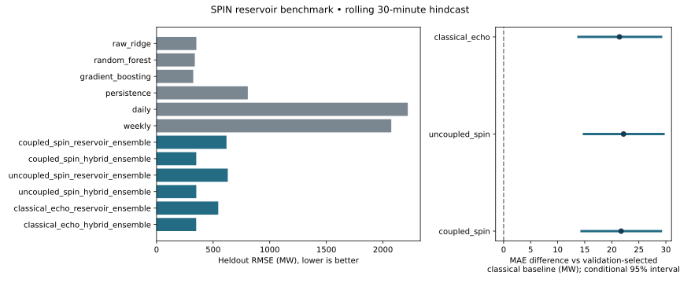

Electricity-grid forecasting
Quantum reservoirs against strong classical controls
Benchmark continuous-variable and analogue-spin dynamics with chronological evaluation and resource accounting.
324.3 MW RMSE: gradient boosting; ≈351.0 MW: quantum hybrids.
Motivation
Test whether verified quantum reservoir features add forecasting value once data timing, model selection and classical feature access are controlled.
Implementation
Two bosonic modes use Gaussian/Kerr ablations and Fock-cutoff checks; six interacting spins use exact dynamics and independent Qiskit references. Expanding validation folds select models before a fixed test interval. Persistence, seasonal forecasts, ridge, random forest, gradient boosting and a classical reservoir provide matched controls.
Results
Across 2,823 held-out targets, gradient boosting reaches 324.3 MW RMSE. Both Kerr-hybrid and interacting-spin-hybrid ensembles reach approximately 351.0 MW; persistence reaches 806.4 MW. Verified quantum dynamics and resource estimates are retained alongside this negative predictive-advantage result.
Limitations
This is a historical 30-minute-ahead hindcast, not an operational forecast. One geographic series and seasonal holdout do not establish general superiority. Routing, calibration and hardware noise are not modelled; seed spread and temporal uncertainty do not guarantee absence of overfitting.
